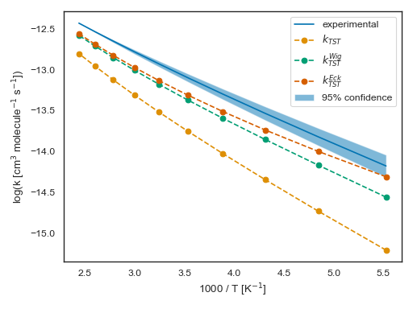
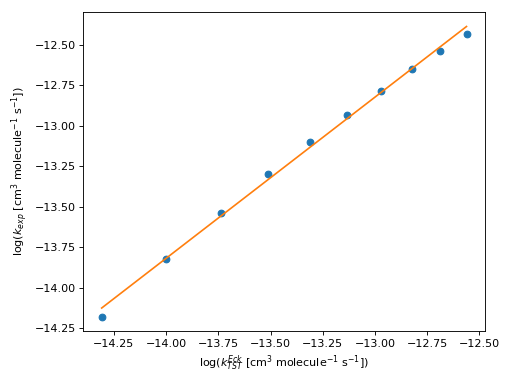
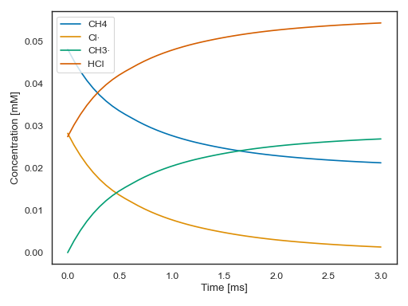

Hydrogen abstraction of methane by chlorine atoms¶
We are going to compare the following atmospheric reaction with experimental results:
\[\require{mhchem}
\ce{Cl + CH4 -> HCl + CH3}\]
NASA reports an accepted value of \(1.0 \times 10^{-13} \text{cm}^3 \text{molecule}^{-1} \text{s}^{-1}\) [3]. In fact the following is a plot of the accepted Arrhenius plot of their accepted regression, together with uncertainty bands:
#!/usr/bin/python3
"""Compare calculated reaction rate constants with experimental ones."""
import os
import sys
import numpy as np
import matplotlib.pyplot as plt
import seaborn as sns
from scipy import stats
from overreact import api
sns.set(style="white", palette="colorblind")
temperatures = np.linspace(181, 410, num=10)
k_exp = 2.36e-12 * (temperatures / 298.0) ** (1.37) * np.exp(-939.0 / temperatures)
f = 1.05 * np.exp(50 * (1.0 / temperatures - 1.0 / 298.0))
fig, ax = plt.subplots()
ax.plot(1000 / temperatures, np.log10(k_exp), label="experimental")
ax.fill_between(
1000 / temperatures,
np.log10(k_exp / f ** 2),
np.log10(k_exp * f ** 2),
label="95% confidence",
alpha=0.5,
)
basisset = "6-311G(2df,2pd)" # 6-311G(2df,2p) best predicts activation enthalpy
if len(sys.argv) > 1:
basisset = sys.argv[1]
model = api.parse_model(
os.path.join(api.data_path, f"tanaka1996/UMP2/{basisset}/model.k")
)
k_cla = []
k_wig = []
k_eck = []
for temperature in temperatures:
k_cla.append(
api.get_k(
model.scheme,
model.compounds,
temperature=temperature,
scale="cm3 particle-1 s-1",
tunneling=None,
)
)
k_wig.append(
api.get_k(
model.scheme,
model.compounds,
temperature=temperature,
scale="cm3 particle-1 s-1",
tunneling="wigner",
)
)
k_eck.append(
api.get_k(
model.scheme,
model.compounds,
temperature=temperature,
scale="cm3 particle-1 s-1",
)
)
linregress_eck = stats.linregress(np.log10(k_eck).flatten(), np.log10(k_exp))
ax.set_ylabel(r"log(k [cm$^3$ molecule$^{-1}$ s$^{-1}$])")
ax.set_ylabel(r"log(k [cm$^3$ molecule$^{-1}$ s$^{-1}$])")
print("Classic ~", stats.linregress(np.log10(k_cla).flatten(), np.log(k_exp)))
print("Wigner ~", stats.linregress(np.log10(k_wig).flatten(), np.log10(k_exp)))
print("Eckart ~", linregress_eck)
plt.plot(1000 / temperatures, np.log10(k_cla), "o--", label=r"$k_{TST}$")
plt.plot(1000 / temperatures, np.log10(k_wig), "o--", label=r"$k_{TST}^{Wig}$")
plt.plot(1000 / temperatures, np.log10(k_eck), "o--", label=r"$k_{TST}^{Eck}$")
ax.set_ylabel(r"log(k [cm$^3$ molecule$^{-1}$ s$^{-1}$])")
ax.set_xlabel(r"1000 / T [K$^{-1}$]")
ax.legend()
fig.tight_layout()
plt.show()
(Source code, png, hires.png, pdf)
{kind=link}
{kind=link}

x = np.log10(k_eck).flatten()
plt.plot(x, np.log10(k_exp), "o")
x = np.linspace(x.min(), x.max())
plt.plot(x, linregress_eck.slope * x + linregress_eck.intercept, "-")
plt.ylabel(r"log($k_{exp}$ [cm$^3$ molecule$^{-1}$ s$^{-1}$])")
plt.xlabel(r"log($k_{TST}^{Eck}$ [cm$^3$ molecule$^{-1}$ s$^{-1}$])")
plt.tight_layout()
plt.show()
{kind=link}
{kind=link}

Microkinetic simulation¶
#!/usr/bin/python3
"""Simulate a microkinetics system using calculated reaction rate constants."""
import os
import sys
import matplotlib.pyplot as plt
import numpy as np
import seaborn as sns
from overreact import api
sns.set(style="white", palette="colorblind")
temperature = 298.15
basisset = "6-311G(2df,2pd)" # 6-311G(2df,2p) best predicts activation enthalpy
if len(sys.argv) > 1:
basisset = sys.argv[1]
model = api.parse_model(
os.path.join(api.data_path, f"tanaka1996/UMP2/{basisset}/model.k")
)
k_eck = api.get_k(
model.scheme, model.compounds, temperature=temperature, scale="M-1 s-1"
)
y0_CH4 = 772e-3 / (np.sum(model.compounds["CH4"].atommasses) * 1e3)
y0_Cl = 1 / (np.sum(model.compounds["Cl·"].atommasses) * 1e3)
y0_HCl = 1 / (np.sum(model.compounds["HCl"].atommasses) * 1e3)
y0 = [y0_CH4, y0_Cl, 0.0, 0.0, y0_HCl]
print(y0)
t_span = [0, 3e-3]
dydt = api.get_dydt(model.scheme, k_eck)
t, y, r = api.get_y(dydt, y0=y0, t_span=t_span, method="Radau")
print(model.scheme.compounds)
print(y[:, -1])
fig, ax = plt.subplots()
for i, name in enumerate(model.scheme.compounds):
if not api.is_transition_state(name):
ax.plot(1e3 * t, 1e3 * y[i], label=f"{name}")
ax.set_ylabel("Concentration [mM]")
ax.set_xlabel("Time [ms]")
ax.legend()
fig.tight_layout()
plt.show()
(Source code, png, hires.png, pdf)
{kind=link}
{kind=link}
